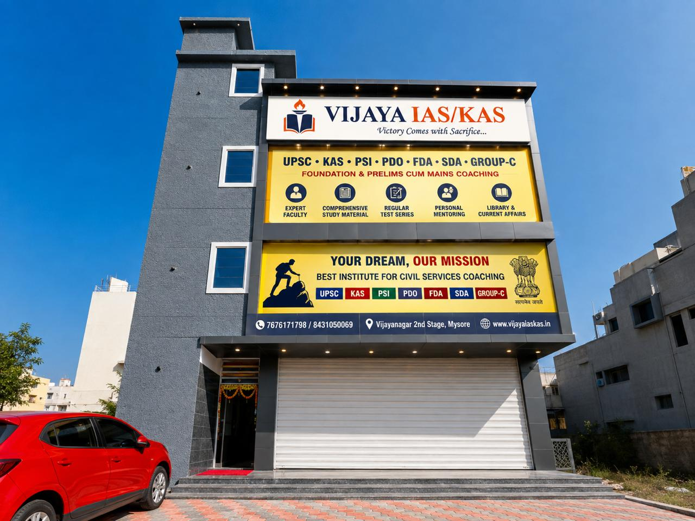
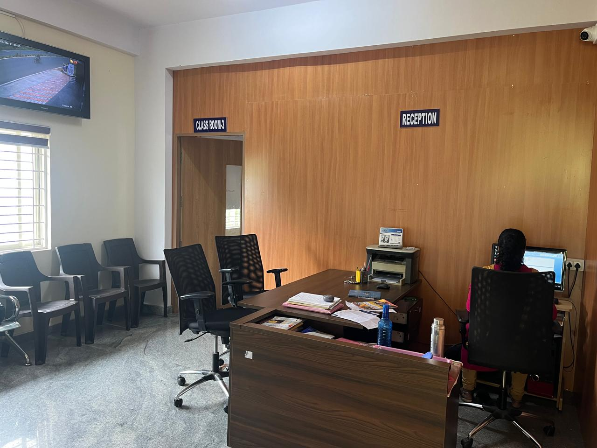
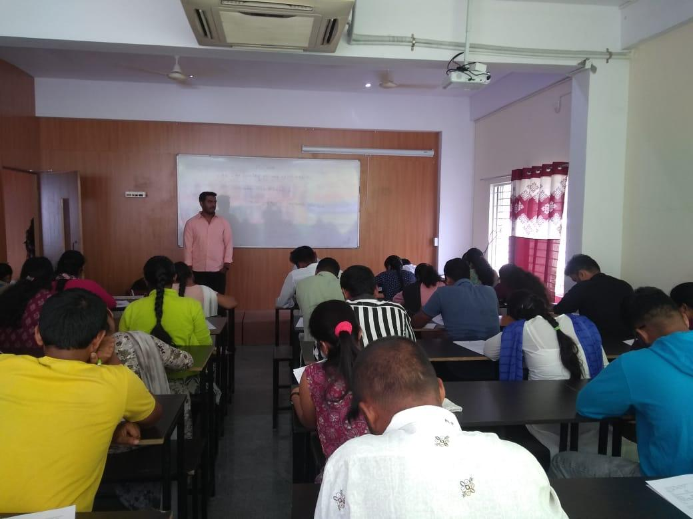
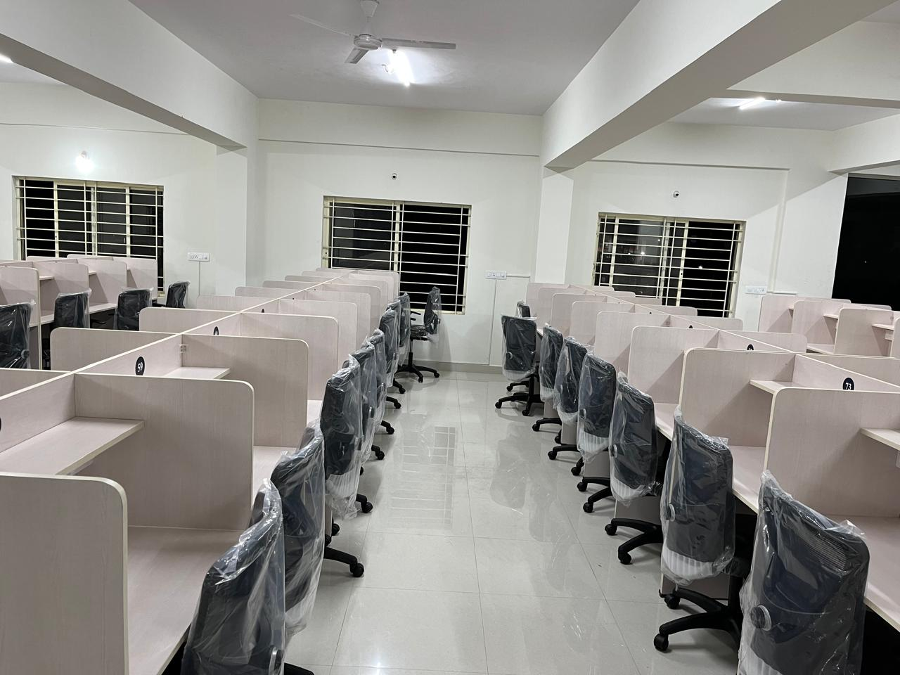
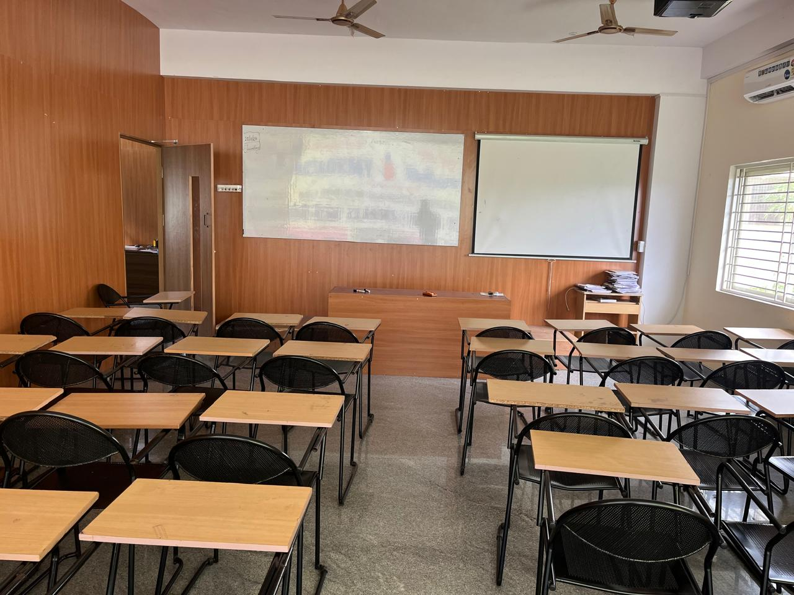
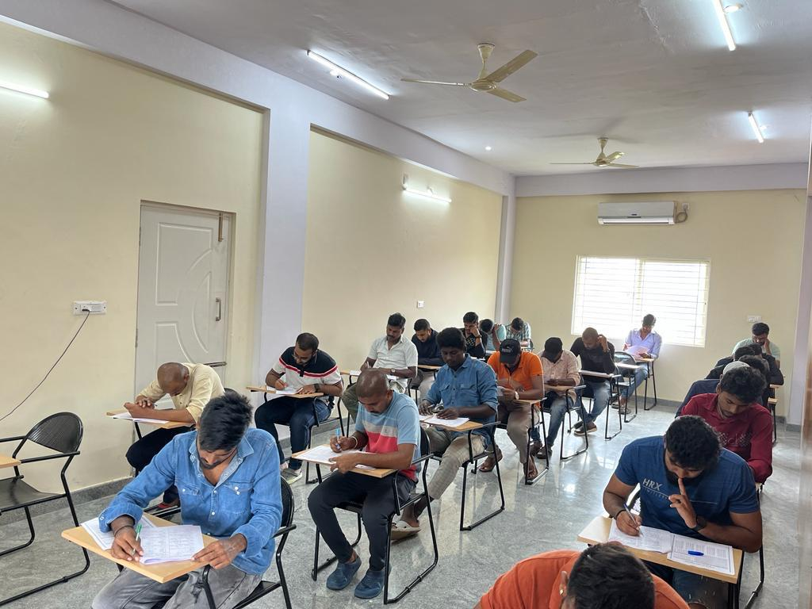
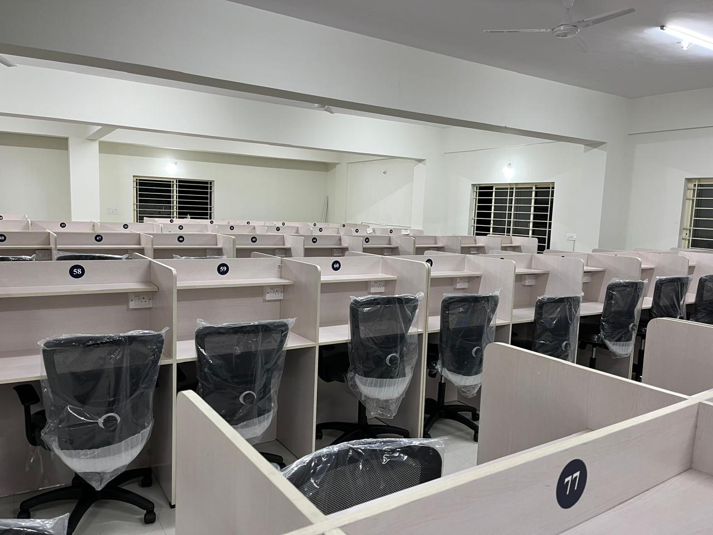
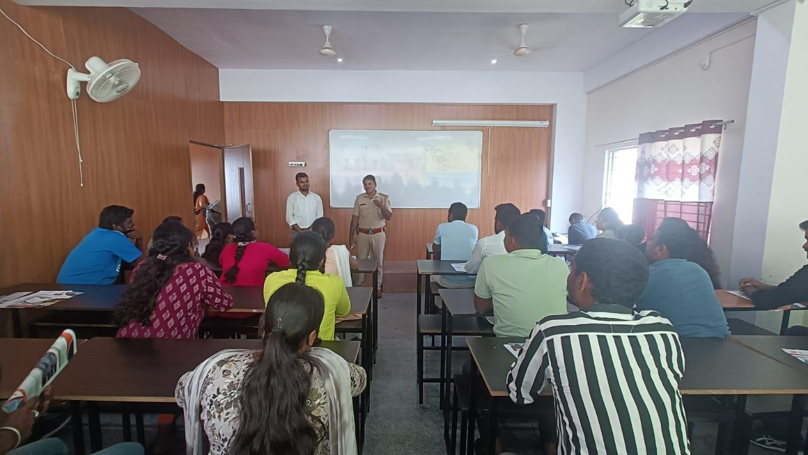
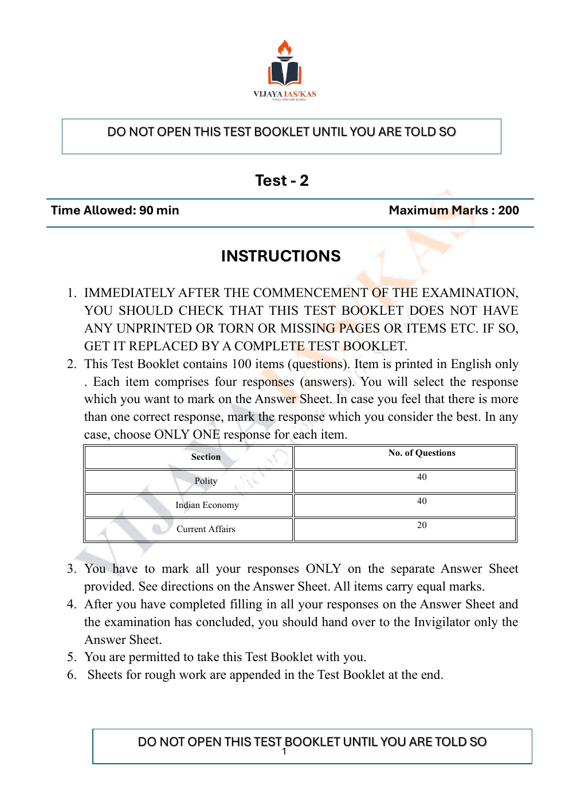
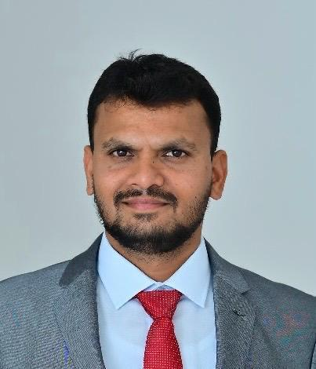

UPSC Civil Services
Foundation preparation covering Prelims, Mains orientation, current affairs, answer writing and test practice.
View complete syllabus →
Structured learning for aspirants preparing for civil services and Karnataka competitive examinations in Mysuru.
A focused learning environment in Vijayanagar 2nd Stage, Mysuru, built for aspirants preparing for UPSC, KPSC/KAS and Karnataka competitive examinations.
Our approach combines concept-building, syllabus-based classroom preparation, current affairs, regular practice, study material, mentoring and a dedicated study environment. The aim is to help students move from understanding the syllabus to practising consistently for the exam.



Classrooms, study spaces, test practice and guidance sessions from the institution.




For UPSC, KPSC/KAS and Group C, the complete syllabus opens on a separate page for easy reading - no syllabus PDF required.
Foundation preparation covering Prelims, Mains orientation, current affairs, answer writing and test practice.
View complete syllabus →Karnataka-focused General Studies, state current affairs, Prelims preparation and descriptive Mains orientation.
View complete syllabus →General Knowledge, Karnataka-specific topics, General Kannada, General English, computer knowledge and exam practice.
View complete syllabus →Preparation support for state competitive examinations including PSI, PDO, FDA and SDA based on the relevant notification.
Ask about a course →Contact VIJAYA IAS/KAS for programme details, schedule, fees and admission guidance.

A full 100-question practice paper is now available directly on the website.

Faculty photographs and names.


Names and designations reproduced from the material provided by VIJAYA IAS/KAS.
Photos from the institute, including classroom teaching, test practice, reception, office and dedicated study areas.
Vijayanagar 2nd Stage, Mysuru, Karnataka